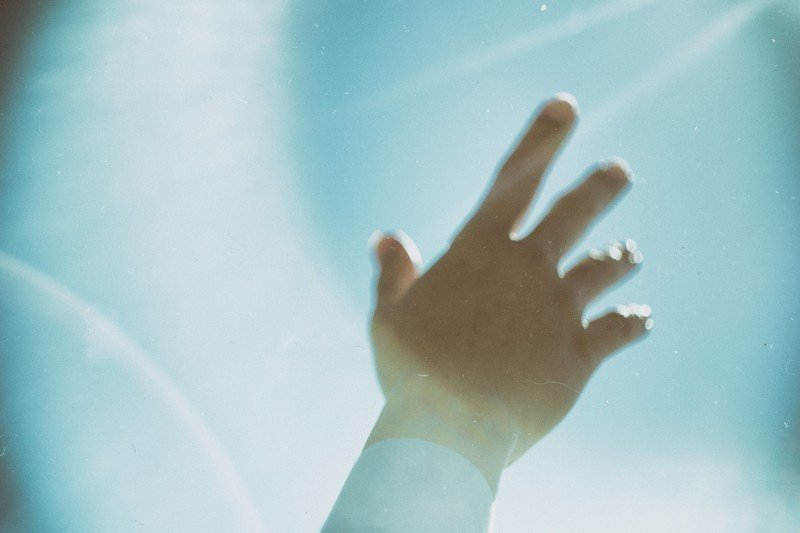

久しぶり。元気にしてたかい？
今までどこに行っていたんだって？
たいしたことないさ。ただ、暗闇の中をしばらく歩いていたんだ。
ある日目を覚ますと、そこは暗闇だった。
最初は驚いたよ。
夢だと思って、何度も自分の顔をつねってみたけど、ちゃんとした痛みが返ってくるだけ。
でも直感した。
僕はここに来るべくして来てしまったのだと。
なぜこんな所に来てしまったのか。
考えてみたけれど、結局は自分の選んだ道。
誰のせいでもなかった。
時間。
思い出。
大切な人。
失ったものの大きさを思い知ったよ。
自分という人間の愚かさを責めたりもした。
"あの時こうしていれば"
戻らない時計の針を憎めば憎むほど、この世界から消えてしまいたいと思った。
しばらくは暗闇の中、目を瞑っていたんだ。
でも、じっとしていても心の中の失望は大きくなって、次第に精神さえも真っ暗になりそうになった。
かといって、目を開けてみても真っ暗闇。
なんて厳しい仕打ちなんだと神さえも憎んだよ。
後悔は募るばかりだったけど、ここで死んだらどうなるかを考えた。
"お前は弱い人間だ"
"お前には失望したよ"
見知らぬ悪意の声が迫ってきた。
それを追い払うように、何度も何度も頭を振った。
"もう逃げるのは嫌"
"もう諦めるのはたくさんだ"
自分自身を鼓舞するようになるまでは、とてつもなく長い時間がかかった。
でも、それでも僕は、前を見て歩き始めることにしたんだ。
それは決して見知らぬ誰かのためじゃない。
自分のためだけに歩もうと決めたのさ。
最初の1歩は本当に勇気が必要だった。
歩き方は人それぞれでも、スタートはみんな同じ。
どんな偉人でも昔は赤ん坊なのと一緒みたいに。
1人は慣れっこだと思い込んでいたけど、どうしようもない寂しさが押し寄せてくる時もあった。
"このままずっと孤独なんだろうか"
大きな負の感情に苛まれたりもした。
でも心を無にして何とか歩き続けていたら、ある時声がしたんだ。
誰かに助けを求める声。悲痛で苦しもがく声。
そいつが誰なのか、わかりゃしないけど、気づいたら僕も大きな声で助けを求めていた。
なんて無様な姿だろう。
心は殺そうとしても、やっぱり人の心を求めてしまうことを思い知ったよ。
段々と声が大きくなっていき、ついに互いの手が触れ合った。
その瞬間、僕らは真っ暗な世界で友達になったんだ。
今思えば、ファーストコンタクトがこんな形なのは世界で初めてなんじゃないかな。
不思議な出会いもあるってもんだよ。
しばらく2人で歩いていると、また誰かの声がした。僕らは3人になった。
その後も色々な知らない人たちと知り合うことができたよ。もちろん、顔なんて見えやしないけどね。
でも、何も見えなくても互いが互いを必要としていた。その時、初めて人の気持ちを知れた気がしたんだ。
歩いている間は多くのことを話した。
仲が深まってきた頃には、将来の夢も話し合ったりしたなあ。
中には泣き出してしまう人もいたくらいさ。
手渡そうとしたハンカチをうまく渡せなかったのは、未だに恥ずかしいけどね。
そんなこんなで、同じ暗闇で出会った者同士、はぐれないように一緒に手をつないで歩いてきた。
小学生の行進みたいに。それはもう、子どもの頃に戻ったようだった。
大の大人たちが手を離さないようにしている光景はどんなものだったのか、今思えば見てみたかったなあ。
誰かに指を差されて笑われたっていいじゃないか。
その時はみんなで堂々と胸を張って笑い返してやろう。そんな気分だったんだ。
僕はもう1人じゃない。心からの喜びを感じていたからか、それとも手の温もりが心強かったのかもしれない。
ある時、つい大声で"ありがとう"と叫んでしまったんだよ。
すると、"いきなり何だ"とか、"らしくないぞ"と遠くで聞こえる。
僕らはいつの間にか友達から親友になっていたみたいで、とても嬉しくなったさ。
「ねえ！ 見て！」
誰かがそう言った。
見上げると、それは綺麗な夜空だった。
小さな宇宙の宝石が、僕らの心にすっと溶け込んでいった。
久々のことでうまく言えやしないけど、これまでにないほどに心が揺さぶられたんだ。
なんだ、すべてが真っ暗なわけじゃないんだって思えたよ。
見方を変えて言えば、明るい世界の時よりも暗闇の中の方が心は明るくなっていた。
皮肉な話だけどね。
それと……なぜだか、僕は涙を流していた。
色々思い出したのは確か。でも、よく思い出そうとしても、曖昧な影が揺れるようにぼんやりしていて、はっきりとした輪郭は霞んでいた。
「ほら」
誰かがそっと何かを手渡した。
「あなたにちゃんとハンカチを渡せてよかった」
そう言って微笑んでいただろう親友の顔を想像しながら、僕は感謝の言葉も言えず、嗚咽を漏らしながら泣いた。
それを見てか、また違う誰かが泣き出した。
"家に帰りたい"
"誰か早く助けてくれよ"
星という輝きは美しすぎる分、僕らを動揺させ始めていた。
「歩き続けるしか、方法はない」
僕は涙を拭ってそう言った。
しんどい時も生きていくために、強い口調でそう言ったんだ。
ふと、寄る辺にしていた人のことが頭をよぎった。
いつかのように話しておきたいことがある。
そのために歩き続けようと。
しばらく僕らは初めて黙って歩いた。
しくしく泣き続ける誰かを罵る人間さえいた。
人はそれぞれ歩く歩幅も目的も違う。
そもそも大勢で同じ方向を歩くこと自体、無理があるのかもしれない。
そんな諦めを感じていた頃、誰かが静寂を破るように言った。
「あそこにバーがあるよ」
僕らはその店のドアベルを鳴らした。
粋な雰囲気を纏った店内で、1人グラスを磨く初老の男が静かな笑みで迎えてくれた。
僕らは好きなものを頼んで乾杯した。マスターの計らいで、おつまみはサービス。
あんなに旨い酒は初めてだった。
"こんな顔をしていたんだ"
"思ったより優しそうな瞳ね"
みんな笑い合っていた。それを見てるだけで、僕も自然と笑みがこぼれた。
1人ひとり違っていていい。
その違いを受け入れることの尊さを感じて、久々の酒もハイペースに進んだ。
でも僕は、自分の弱点をすっかり忘れていた。
そう、すぐに酔いが回って誰よりも早く眠ってしまったのさ。
「幸せそうな顔をしていらっしゃる」
マスターがそう言って、毛布を掛けてくれた所までがその夜の最後の記憶。
「お客さん、朝ですよ」
寝ぼけながら、僕はマスターの言葉を笑って返した。
「何を寝ぼけたことを」
目を開けてみると、店の窓ガラスには柔らかな光が差し込んでいた。
飛び起きて目を擦ると、太陽が昇っていたんだ。
突然のことでびっくりしたさ。なんせ、夜は何事もなく明けていたんだから。
「みんな！ 太陽が昇ってるぞ！」
そう言って周りを見ても、誰もいなかった。
「皆さんお帰りになりましたよ。それはそれは、幸せな顔をされて」
朝を迎えたキラキラした街の光は、変わることなく華やかな世界を動かしていた。
時を刻む時計台、小さな子どもを連れる母親、ショーウィンドウのおしゃれな服、仲睦まじいカップル。
僕は再び戻ってこれたんだと実感したよ。
最初は眩しすぎる光に目を瞑ることもあった。やっぱり自分には暗闇の中がお似合いなんじゃないのか、って。
でも、今はすっかり心地よく感じてるんだ。かつて見てた世界がまるで違う世界に見えていること、未だに信じられない気持ちさ。
そんな世界でやり残していること。
そう、またこうして君と会って話をしたかったんだ。
作り話なんかじゃないよ。その証拠に。
これは何かって？ 見ればわかるだろう。あの夜、店で撮った写真だよ。
みんないい笑顔をしてるだろう。
ほら、君もここに写ってる。
泣かないで。
でもやっと、君にもちゃんとハンカチを渡せそうだ。
こうしてまた顔を見て話せて嬉しいよ。
だから、笑顔を見せておくれ。
それと、暗闇の中で君が言ったこと、覚えているかい？
そう、それさ。
その夢を一緒に叶えよう。
あの時みたいに手をつないで、さ。